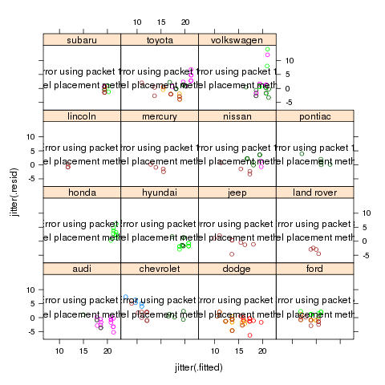
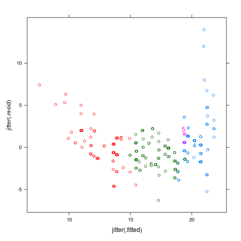
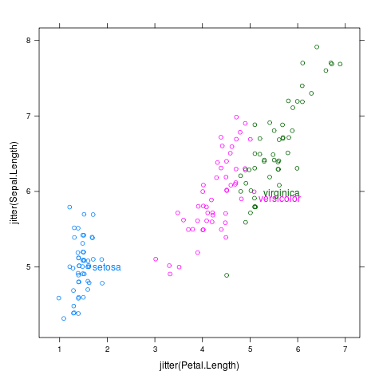
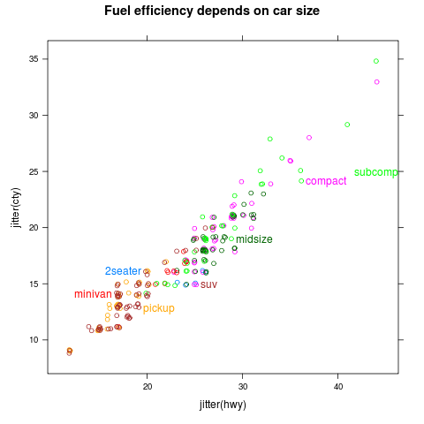
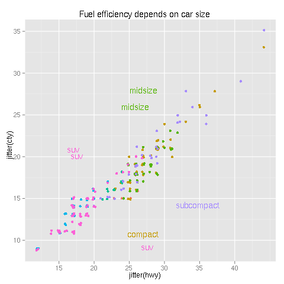

directlabels - scatterplot -
Positioning Method - follow.points
Draws a line between each center and every point, then follows the
line out far enough to give a box outside the cloud. Out of all
the boxes constructed in this way that do not contain any points,
take the one which has the smallest distance to the center. FIXME:
does not work with ggplot2 since the ggplot2 backend doesn't yet
have support of actually knowing how big the text bounding box is.
follow.points <- function
### Draws a line between each center and every point, then follows the
### line out far enough to give a box outside the cloud. Out of all
### the boxes constructed in this way that do not contain any points,
### take the one which has the smallest distance to the center. FIXME:
### does not work with ggplot2 since the ggplot2 backend doesn't yet
### have support of actually knowing how big the text bounding box is.
(d,debug=FALSE,...){
allm <- apply.method(list("dl.jitter","big.boxes"),d)
if(debug)draw.rects(allm)
labtab <- data.frame()
for(g in levels(d$groups)){
x <- d
m <- subset(allm,groups==g)
x$a <- x$y - m$y
x$b <- x$x - m$x
x$h <- sqrt(x$a^2+x$b^2) ## hypotenuse of triangle, not box height!
x$x <- x$x + m$w/2 * x$b/x$h *1.01 ## b/h = cos(theta)
x$y <- x$y + m$h/2 * x$a/x$h *1.01 ## a/h = sin(theta)
x$dist <- (x$x-m$x)^2+(x$y-m$y)^2
x <- transform(x,
left=x-m$w/2,right=x+m$w/2,
top=y+m$h/2,bottom=y-m$h/2)
x$points <- inside(x,d)
## consider only subset of boxes that contain no points
x <- subset(x,points==0)
## take the box with the minimal distance
x <- subset(x,dist==min(dist))[1,]
labtab <- rbind(labtab,transform(x,x=x,y=y,groups=g))
## add the box's 4 points to the list of points
newpoints <- d[1:4,]
newpoints$x <- c(x$left,x$right,x$right,x$left)
newpoints$groups <- g
newpoints$y <- c(x$top,x$top,x$bottom,x$bottom)
d <- rbind(d,newpoints)
}
labtab
}
|  |
class-manufacturer
data(mpg,package="ggplot2")
m <- lm(cty~displ,data=mpg)
mpgf <- fortify(m,mpg)
library(lattice)
p <- xyplot(jitter(.resid)~jitter(.fitted)|manufacturer,mpgf,groups=class)
direct.label(p,"follow.points")
|
|  |
cylinders
data(mpg,package="ggplot2")
m <- lm(cty~displ,data=mpg)
mpgf <- fortify(m,mpg)
library(lattice)
p <- xyplot(jitter(.resid)~jitter(.fitted),mpgf,groups=factor(cyl))
direct.label(p,"follow.points")
|
|  |
iris
library(lattice)
p <- xyplot(jitter(Sepal.Length)~jitter(Petal.Length),iris,groups=Species)
direct.label(p,"follow.points")
|
|  |
mpglattice
data(mpg,package="ggplot2")
library(lattice)
p <- xyplot(jitter(cty)~jitter(hwy),mpg,groups=class,
main="Fuel efficiency depends on car size")
direct.label(p,"follow.points")
|
|  |
mpg
library(ggplot2)
data(mpg,package="ggplot2")
p <- qplot(jitter(hwy),jitter(cty),data=mpg,colour=class,
main="Fuel efficiency depends on car size")
direct.label(p,"follow.points")
|
 |
path
data(normal.l2.cluster,package="directlabels")
library(ggplot2)
p <- ggplot(normal.l2.cluster$path,aes(x,y))+
geom_path(aes(group=row),colour="grey")+
geom_point(aes(size=lambda),colour="grey")+
geom_point(aes(colour=class),data=normal.l2.cluster$pts,pch=21,fill="white")+
coord_equal()
direct.label(p,"follow.points")
|